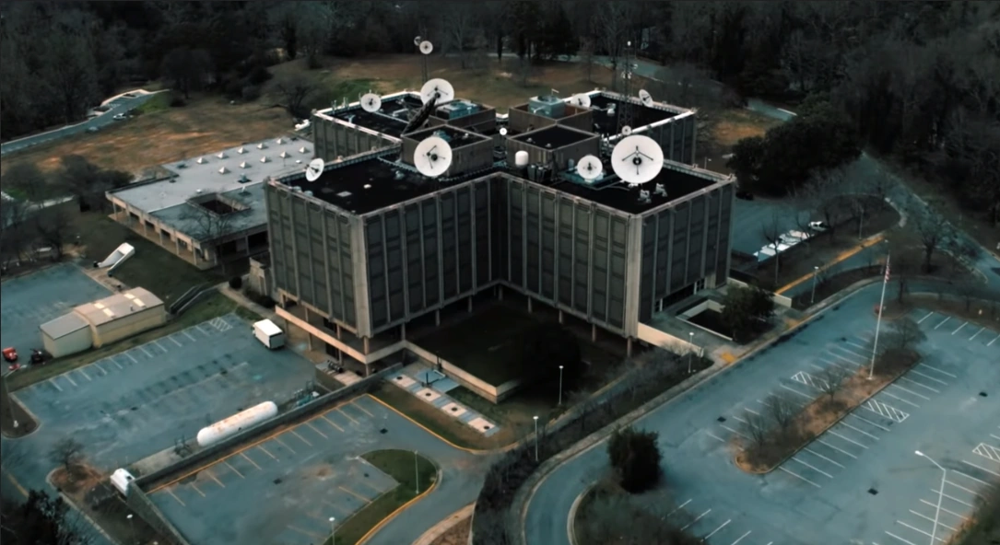
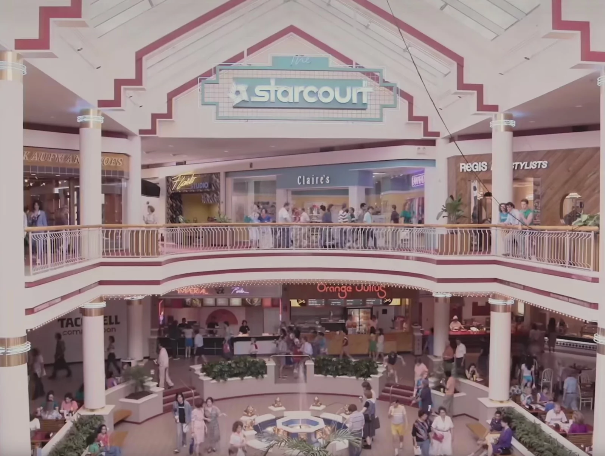
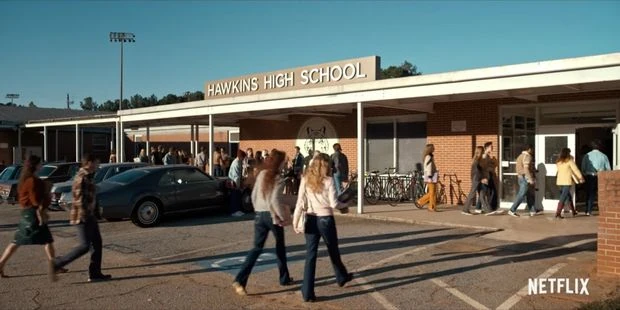
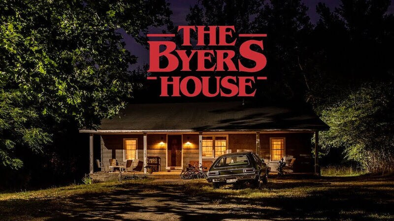
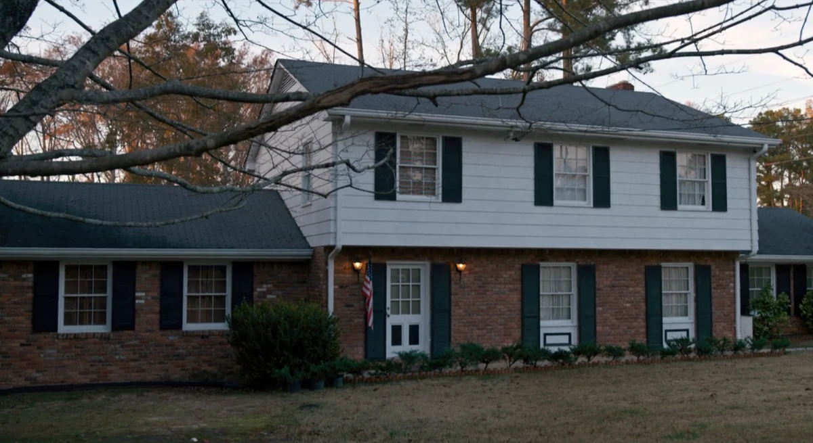
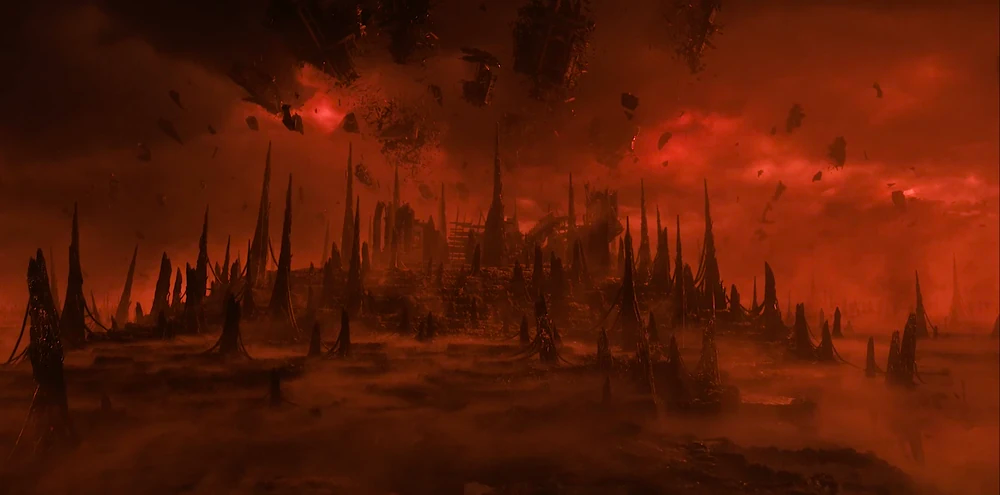

El Laboratorio Nacional de Hawkins funciona como el núcleo del horror científico en la serie, una estructura brutalista aislada donde el Departamento de Energía realizó experimentos psíquicos bajo el proyecto MKUltra. Este sitio es responsable directo de la apertura del portal hacia el Mundo del Revés, transformando un centro de investigación gubernamental en la zona cero de la invasión sobrenatural.

El Starcourt Mall representa el giro hacia la estética neón de finales de los ochenta, ocultando bajo su fachada de consumo y modernidad una base militar soviética subterránea. Este shopping no solo fue el centro social de la ciudad, sino el escenario de la batalla definitiva contra el Azotamentes, donde el brillo de las tiendas contrastaba con la oscuridad de los túneles que intentaban reabrir la grieta entre dimensiones.

La Escuela Media de Hawkins es el refugio de la infancia y la curiosidad, sirviendo como el centro de operaciones donde los protagonistas utilizaban la ciencia escolar para descifrar misterios adultos. Es un espacio que simboliza la lealtad y el ingenio, especialmente recordado por ser el lugar donde el club audiovisual encontró las herramientas necesarias para enfrentar al Demogorgon y proteger a Eleven durante sus primeros días de libertad.

La casa de los Byers se convirtió en el icono de la serie por su atmósfera cargada de angustia y esperanza, especialmente cuando Joyce transformó el living en un panel de comunicación mediante luces de Navidad y un abecedario pintado en la pared. Este hogar, humilde y rodeado por el bosque, simboliza la lucha desesperada de una familia por recuperar a uno de sus miembros, sirviendo como el puente principal entre nuestra realidad y la versión distorsionada del Mundo del Revés.

La casa de los Wheeler representa la estabilidad de la clase media de Hawkins, aunque su verdadero valor reside en el sótano de Mike. Este espacio subterráneo funcionó como el primer centro logístico del grupo, donde las partidas de Dungeons & Dragons se convirtieron en la base para entender las amenazas sobrenaturales y donde Eleven encontró su primer refugio seguro, lejos de las miradas del gobierno.

El Mundo del Revés se presenta como una dimensión espejo de nuestra realidad, una versión deformada y pútrida de Hawkins donde la vida parece haber sido reemplazada por una red biológica de enredaderas y esporas. Es un entorno sumido en una penumbra perpetua, atravesado por relámpagos rojizos y una atmósfera densa que asfixia cualquier rastro de calidez, replicando las estructuras humanas pero cubriéndolas de una vegetación alienígena que late como si fuera un solo organismo.
Este espacio funciona bajo una conciencia colectiva conocida como la Mente de Colmena, lo que significa que cada rincón está conectado y alerta ante la presencia de intrusos. No es simplemente un lugar desierto, sino un ecosistema hostil donde la arquitectura familiar de la ciudad se vuelve extraña y peligrosa, sirviendo como el dominio absoluto de criaturas que desafían la comprensión humana.
Más allá de su apariencia física, este plano se manifiesta como una herida abierta en el tejido de la realidad, un vacío que busca expandirse y consumir el mundo conocido. En su versión más profunda, se revela como un paisaje de formaciones rocosas y tormentas eternas donde el tiempo no fluye de la misma manera, consolidándose como la base de operaciones desde la cual se orquestan todos los ataques que han puesto en jaque la existencia de Hawkins.


Para navegar por otras secciones: